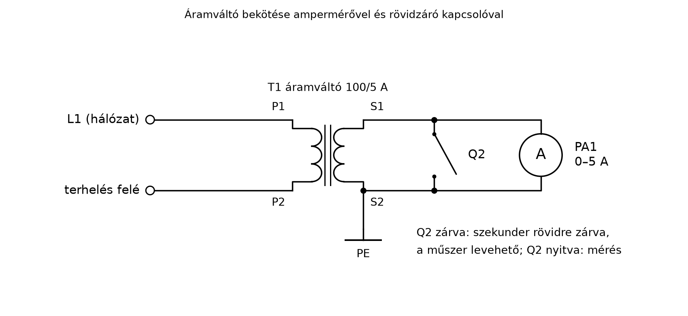
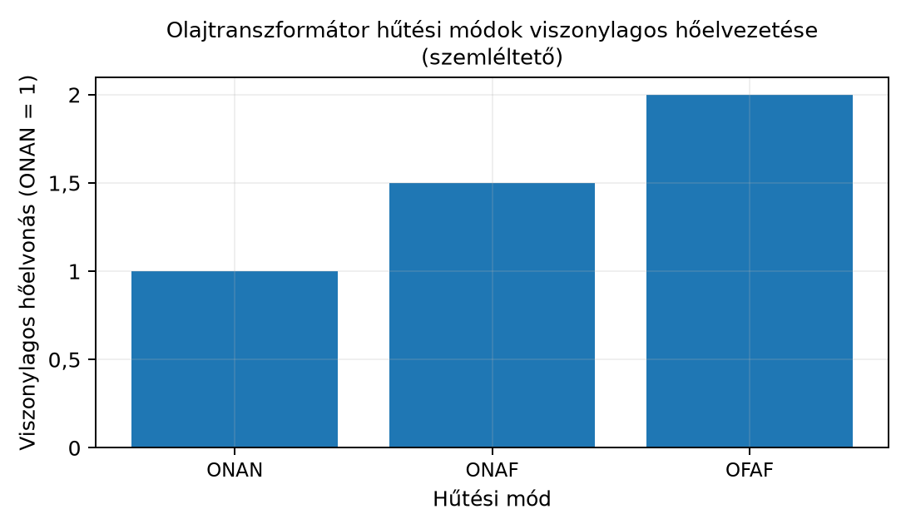

A Háromfázisú transzformátor és kapcsolási csoportok alfejezetben megismerted a háromfázisú transzformátorok működését, tekercselési kapcsolásait és kapcsolási csoportjait. A szerelői gyakorlatban viszont sokszor nem „nagy” erőátviteli transzformátorral, hanem speciális kivitelű készülékekkel találkozol: csengőtranszformátorral, hegesztőgéppel, vezérlőtranszformátorral, mérőváltókkal vagy egy transzformátorállomás olajhűtésű gépével. Ebben az alfejezetben ezeket a kiviteleket, az áram- és feszültségváltók sajátos veszélyeit, valamint az olajtranszformátorok védelmét és telepítését tanulod meg.
Az autótranszformátor olyan transzformátor, amelyben a primer és a szekunder oldal nem galvanikusan elválasztott, hanem egyetlen közös tekercsen osztozik. A feszültségváltoztatást a tekercs leágazása adja.
Definíció. Az autótranszformátor egyetlen tekercseléssel rendelkező transzformátor, amelyben a primer és szekunder kör közös tekercsrészen osztozik. A feszültségáttétel közelítőleg a menetszámok arányával egyezik meg, azaz .
Előnye, hogy kisebb, könnyebb és olcsóbb, mint az azonos teljesítményű kéttekercses transzformátor. Hátránya, hogy a primer és szekunder kör nincs galvanikusan elválasztva, így hálózati feszültségű körben érintésvédelmi szempontból nem ad védőelválasztást. A gyakorlatban autótranszformátort használnak például régi típusú feszültségszabályozókban, indítóberendezésekben vagy szünetmentes tápegységek egyes fokozataiban.
A hegesztőtranszformátor ívhegesztéshez készült, jellemzően lefelé hajló terhelési karakterisztikával. Bekapcsoláskor nagyobb üresjárati feszültség (55–80 V) biztosítja a gyújtást, majd az ív meggyújtása után a feszültség 20–30 V-ra esik le, miközben a hegesztőáram 80–200 A vagy több is lehet.
Szabály. A hegesztőtranszformátort soha ne használd olyan feladatra, ahol a kimenő feszültségnek állandónak kell lennie, mert karakterisztikája szándékosan lágy, azaz a terhelőáram növekedésével a feszültség csökken.
A hegesztőgép primer oldalát általában a műhely elosztójából, külön védőelemmel látják el. A szekunder kört rövid, nagy keresztmetszetű hajlékony kábelekkel, speciális hegesztőfogóval és testkábellel kötik. A testkábel csatlakoztatását a munkadarabhoz mindig közvetlenül, tiszta felületre kell elvégezni.

Definíció. A biztonsági transzformátor olyan leválasztó transzformátor, amelynek névleges kimenő feszültsége legfeljebb 50 V váltakozó feszültség, és a primer–szekunder tekercsek között kettős vagy megerősített szigetelés van (MSZ EN 61558-2-6; ellenőrizendő: aktuális kiadás). A SELV vagy PELV áramkör tipikus forrása; a szabvány ezen kívül akkumulátort, a hálózattól független forrást és megfelelő szabványú (SELV-minősítésű) elektronikus tápegységet is elfogad (MSZ HD 60364-4-41; ellenőrizendő: pontos szakasz). Az 50 V-os határ a névleges, üresjárásban is betartandó érték (ellenőrizendő: szabvány). A kimenetét törpefeszültségű áramkörök (SELV vagy PELV) táplálására használják.
Gyakori kivitel: 230 V / 12 V vagy 24 V, 20–200 VA, csengőhöz, LED világításhoz, fürdőszobai tükörvilágításhoz, kaputelefonhoz. A szekunder oldalon nem jelenik meg hálózati feszültség, ezért az ilyen áramkör sokkal kisebb áramütési kockázatot jelent. A csatlakozókapcsokon azonban ügyelj arra, hogy a primer oldal 230 V-os kapcsait ne cseréld fel a 12 V-os kimenettel.
Szabvány. A biztonsági transzformátorok követelményeit az MSZ EN 61558 sorozat tárgyalja (ellenőrizendő: aktuális szabványkiadás). A gyártói adatlapon fel kell tüntetni a maximális kimenő feszültséget, a teljesítményt és a szigetelési osztályt.
A választó- vagy leválasztó transzformátor áttétele általában 1:1, azaz kimenő feszültsége megegyezik a bemenővel, de a szekunder oldal galvanikusan el van választva a hálózattól. A cél a védőelválasztás: ha a szekunder körben egy testzárlat alakul ki, a primer hálózat földelt pontja és a szekunder kör között nincs vezető kapcsolat, ezért a hibafeszültség nem zárul áramkörré. Ilyen táplálást például kéziszerszámoknál, szűk, vezetőképes környezetben (kazán, tartály) végzett munkánál vagy javítóműhelyi mérőhelyen használnak. (Az orvosi helyiségek leválasztó transzformátoros táplálása más rendszer: orvosi IT-hálózat szigetelésfigyelővel, több fogyasztóval; ez nem védőelválasztás – ellenőrizendő: MSZ HD 60364-7-710.)
Szabály. Védőelválasztásnál a szekunder kör egyetlen pontját sem szabad földelni vagy védővezetőhöz kötni; egy leválasztó transzformátorról lehetőleg egyetlen készüléket táplálj. Több készülék csak akkor csatlakozhat, ha testeiket földeletlen, szigetelt egyenpotenciálú vezető köti össze, és a további feltételek teljesülnek (MSZ HD 60364-4-41, védőelválasztás; ellenőrizendő: pontos szakasz). A szekunder vezeték legyen rövid és ellenőrizhető, mert egy második szigetelési hiba már veszélyes érintési feszültséget okozhat.
A gyújtótranszformátor nagyon nagy feszültséget állít elő kis teljesítménnyel, hogy szikrát gyújtson: gázégőben, olajégőben, szikraköznél. A kimenő feszültség 7–15 kV lehet, árama néhány milliamper. Mivel a kimenet nagyfeszültségű, műszerrel nem szabad közvetlenül mérni; a hibakeresés csakis gyártói dokumentáció alapján, szakképzett személlyel és az előírt biztonsági szabályokkal történhet.
A mérőváltók feladata, hogy a nagy áramú vagy nagy feszültségű hálózati mennyiséget a mérőműszerek és védelmi relék számára kezelhető, kis értékre alakítsák át, ugyanakkor galvanikus leválasztást is biztosítsanak. Az áramváltó az áramot, a feszültségváltó a feszültséget alakítja át.
Definíció. Az áramváltó olyan mérőváltó, amelynek primer tekercse sorosan csatlakozik a mérendő áramú vezetékbe, szekunder tekercse pedig zárt áramkörre (mérőműszerre, relére vagy rövidzárra) kapcsolódik. Névleges szekunder árama Magyarországon jellemzően 1 A vagy 5 A.
Az áramváltó menetszám-áttétele úgy működik, hogy a primer menetszám kicsi, a szekunder menetszám nagy. Ideális esetben:
ahol az áramváltó névleges áttétele, például .
A gyakorlati áramváltókon a névleges adatok felirata például: „100/5 A 5 VA 0,5 osztály”.
Figyelem. Áramváltó üzem közben a szekunder oldalát soha nem szabad megszakítani! Ha a szekunder kör nyitott marad, a primer áram a vasmagot erősen telítésbe viszi, a szekunder kapcsokon veszélyesen nagy feszültség (akár több kV) indukálódik, és a vas is túlmelegedhet. Ezért az áramváltó szekunderét, ha nincs rácsatlakoztatott műszer, rövidre kell zárni, vagy erre szolgáló rövidzáró kapcsolóval kell felszerelni.

A rajzon a primer (P1–P2) a fővezetőbe sorosan kapcsolódik, a szekunder kör (S1–S2) ettől galvanikusan elválasztott. A Q2 rövidzáró kapcsoló a műszerrel párhuzamosan, közvetlenül az S1 és S2 kapcsok között van: a műszer levétele előtt Q2-t zárjuk, így a szekunder kör soha nem szakad meg. Az S2 kapocs földelt.
Szabvány. Az áramváltók és feszültségváltók követelményeit, pontossági osztályait a mérőváltókra vonatkozó MSZ EN 61869 sorozat tartalmazza (ellenőrizendő: pontos szabványhivatkozás). A védőföldelést a szekunder kapocsra általában az S2-re kell kötni, a gyártói rajz szerint.
Definíció. A feszültségváltó olyan mérőváltó, amelynek primer tekercse párhuzamosan csatlakozik a mérendő feszültségre, szekunder tekercse pedig nagy impedanciájú, közel üresjárásban működő terhelésre (voltmérő, védelmi relé). Névleges szekunder feszültsége 100 V vagy .
A feszültségváltó áttétele:
Például egy 10 kV / 100 V-os feszültségváltó áttétele 100.
Figyelem. A feszültségváltó szekunder oldalát sem szabad rövidre zárni, mert a nagy szekunder áram a kis tekercsellenálláson keresztül gyorsan tönkreteszi a tekercset, és veszélyes hő keletkezhet. A szekunder kör egyik pontját általában földelni kell, így a szekunder áramkör a nagyfeszültségtől leválasztott, földpotenciálhoz rögzített áramkör lesz.
Példa 1 – Autótranszformátor. Egyetlen tekercs feszültségszabályozóként működik. A teljes tekercs 230 V-ra csatlakozik, menetszáma 920. A 110 V-os leágazás hány menetes?
Adott: . Keresett: .
A feszültségáttétel:
Behelyettesítve:
Ellenőrzés: a feszültségarány , a menetszám-arány , tehát egyezik. ∎
Példa 2 – Áramváltó. Egy 100/5 A-es, 0,5 osztályú áramváltóra 5 A-es ampermérő csatlakozik. Mekkora szekunder áram folyik, ha a primer vezeték 60 A-t visz?
Adott: . Keresett: .
Ellenőrzés: 60 A a névleges primer áram 60%-a, így a szekunder áramnak is a névleges 60%-ának, azaz 3 A-nak kell lennie. A műszer skálája természetesen 100 A-re kalibrálható, így 60 A-t mutat. ∎
Példa 3 – Feszültségváltó. Egy 10 000/100 V-os feszültségváltóra 100 V-os voltmérő van kötve. A primer feszültség 10 450 V. Mennyit mutat a voltmérő?
Adott: . Keresett: .
Ellenőrzés: a primer feszültség 4,5%-kal haladja meg a névleges feszültséget, így a szekunder feszültség is 4,5%-kal nagyobb, azaz 104,5 V. A műszer skálája 10 000 V-ra kalibrálva 10 450 V-ot mutat. ∎
A nagyobb teljesítményű elosztótranszformátorok (például 50–1600 kVA) gyakran olajszigetelésű és olajhűtésű kivitelben készülnek. A transzformátor aktív része (vasmag és tekercsek) fémtartályban, ásványi vagy növényi alapú szigetelőolajban helyezkedik el. Az olaj kettős szerepet lát el: szigetel és elvezeti a hőt.
A hűtés módja szerint megkülönböztetjük:
A tartály felületét gyakran bordákkal vagy radiátorokkal növelik. A felső és alsó hőmérséklet-különbség természetes keringést indít el, ezért a meleg olaj felfelé száll, a hűtőbordán lehűl, majd alul visszaáramlik a tekercsekhez.

Buchholz-relé. Az olajtöltetű transzformátor tartálya és a konzervátor (olajtágulási tartály) közé gázrelé, ún. Buchholz-relé van beépítve. A belső szigetelési hiba (szikrázás, ívképződés) során az olaj elbomlik, gáz képződik. A gázbuborék a relébe jutva először a felső úszót megbillenti, ami riasztást ad; ha a hiba nagyívű, akkor az olajáramlás hirtelen meglökésre az alsó úszót is átbillenti, ami azonnali kikapcsolást vált ki.
A Buchholz-relé két fokozatú: „riasztás” (gázgyűlés) és „kioldás” (erős olajáramlás). A riasztásnál a transzformátort ellenőrizni kell, mintát venni az olajból, és gázanalízist végezni. A kioldásnál a transzformátort nem szabad visszakapcsolni alapos vizsgálat nélkül.
Hőmérséklet-védelem. Az olaj hőmérsékletét a tartályba épített hőmérővel jelzik, gyakran kontaktusokkal: előbb jelzés (pl. 80 °C), majd kioldás (pl. 95 °C) – az értékeket mindig a gyártói útmutató határozza meg, ezért jelölésük szükséges. A tekercshőmérséklet-mérő az olajhőmérséklethez hozzáad egy, a tekercsárammal arányos hőmérséklet-különbözetet, így a valós tekercshőmérsékletet becsüli.
Egyéb védelmek. Az elosztótranszformátor primer oldalát túláramvédelem, gyakran olvadóbiztosító vagy motoros hajtású megszakító védi. A szekunder oldalon kismegszakítók vagy megszakítók adják a túlterhelés- és zárlatvédelmet. Nagyobb egységeknél differenciálvédelem, túlnyomás-védelem, olajszint-ellenőrzés is előfordul. A védelmeket a hálózati engedélyes előírásai és az MSZ EN 60076 sorozat szerint alakítják ki (ellenőrizendő: aktuális kiadás).
Szabvány. Az erőátviteli transzformátorokra vonatkozó általános követelményeket az MSZ EN 60076 sorozat tárgyalja. A villamos berendezés telepítésénél az MSZ HD 60364 és a hálózati engedélyes csatlakozási feltételei az irányadók (ellenőrizendő: pontos hivatkozások).
Az olajtranszformátorokat általában transzformátorállomásba szerelik. A telepítés során be kell tartani a gyártói utasításokat és a helyi előírásokat.
Szabály. A transzformátor környezetét úgy kell kialakítani, hogy a keletkező hőt el tudja vezetni, a szivárgó olaj ne szennyezze a talajt, és tűz esetén a láng ne terjedhessen át a szomszédos épületekre. Ezt a telepítési helyszín típusa (beltéri, kültéri) és a környezet szerint kell méretezni (ellenőrizendő: aktuális tűzvédelmi és környezetvédelmi előírások).
A beltéri transzformátorhelyiségnél különös figyelmet kell fordítani a szellőzésre. A természetes szellőzés alsó és felső nyílásokkal biztosítható; a méretezést a hőveszteség, a helyiség térfogata és a megengedett belső hőmérséklet alapján számítják. Kültéri állomásnál a burkolat, a kerítés és a tűztávolság a meghatározó.
Az üzembe helyezés előtt ellenőrizni kell:
A karbantartás időszakos feladatai: olajminta-vétel (szigetelési szilárdság, víztartalom, gázanalízis), szigetelési ellenállás mérés, csatlakozók húzása, elszíneződés és szivárgás keresése, a hűtőfelület tisztítása, a védelmek működési próbája.
Egy középfeszültségű/kisfeszültségű (KÖF/KIF) transzformátorállomásban az olajtranszformátor primer oldala 10 kV-os középfeszültségű hálózathoz csatlakozik, szekunder oldala a 230/400 V-os kisfeszültségű elosztót táplálja. Az állomásban a szerelő azt tapasztalja, hogy a Buchholz-relé riasztást adott, de a transzformátor még üzemel. A szakszemélyzet olajmintát vesz, és a gázanalízis arra utal, hogy a tekercsszigetelés (papír-olaj) helyi túlmelegedést szenvedett; valószínűleg egy laza csatlakozás vagy a hűtés nem megfelelő. A szakszemélyzet a transzformátort kiveszi az üzemből, megismétli az olaj-gázanalízist (trend), megméri a tekercsellenállásokat és a szigetelési ellenállást; a laza belső csatlakozás vagy a túlmelegedés okát a gyártó bevonásával tárják fel, és csak a hiba megszüntetése és a vizsgálatok megfelelő eredménye után helyezik újra üzembe. A hiba tanulsága: a gázrelé riasztása nem „csak egy jelzés”, hanem a belső bomlási folyamat korai jele, amelyet mindig komolyan kell venni.
Biztonsági korlát. A fenti műveletek hálózati feszültségű és középfeszültségű környezetben történtek; ilyen munkát csak jogosult, a hálózati engedélyes által felhatalmazott szakszemélyzet végezhet, a feszültségmentesítés öt szabályával.
Eset: Áramváltó szekunder szakadás. Egy ipari elosztóban a szerelő azt észleli, hogy az energiafogyasztás-mérő áramértéke időnként nullára esik, miközben a motorok járnak. A kapcsolószekrényben lévő áramváltó szekunder kivezetéseit megvizsgálva az egyik sorkapocs meleg, a szigetelés enyhén barna, és a kapcsolatok lazák.
Tünet: a mérő nem mutat áramot, a sorkapocs melegszik, szikrázásnyom látszik.
Hipotézis: a szekunder kör szakadt, ezért az áramváltó vasmagja telítésbe ment, nagy feszültség indukálódik, és a laza érintkezés melegszik.
Mérés és ok: a berendezést feszültségmentesítik (öt szabály). A szekunder kör folytonosságát multiméterrel ellenőrzik; a kapocs és a vezeték között szakadást találnak. A primer oldalt eközben nem szabad bontani, amíg a szekunder nincs megbízhatóan rövidrezárva vagy a berendezés le van választva.
Javítás: a szekunder kört megfelelő keresztmetszetű vezetékkel, húzónyomatékos sorkapoccsal újrakötik, az áramváltó szekunder S2 kivezetését földelik. A visszakapcsolás után a mérő újra pontos értéket mutat.
Megelőzés: az áramváltó szekunderét mindig tehermentesített, jól húzott csatlakozóval kell szerelni; a mérő levételéhez rövidzáró kapcsolót vagy rövidzárat kell alkalmazni. A szekunder áramkört időszakosan ellenőrizni kell.
A válaszokat lásd a Megoldások elején.
1. feladat (A). Sorolj fel három speciális transzformátort és jellemezd a feladatukat egy-egy mondatban.
2. feladat (A). Egy autótranszformátor teljes tekercsének menetszáma 1200, primer feszültsége 230 V. Hány menetes a leágazás, ha a kimeneti feszültség 115 V?
3. feladat (B). Egy 300/5 A-es áramváltó szekunder oldalára 5 A-es mérő van kötve. Számítsd ki a szekunder áramot 75, 150 és 300 A primer áramnál. Ellenőrizd az arányosságot.
4. feladat (B). Egy feszültségváltó áttétele . A voltmérő 98,5 V-ot mutat. Mekkora a primer feszültség?
5. feladat (C). Egy hegesztőtranszformátor primer feszültsége 230 V, üresjárati szekunder feszültsége 70 V, névleges hegesztőárama 180 A. A szekunder munkafeszültség 30 V; a szekunder ív ohmosnak vehető. Becsüld meg a primer áramot névleges hegesztőáramnál, ha a primer teljesítménytényező 0,55 (kompenzálatlan, szórótranszformátoros gép), és a transzformátor hatásfoka 90%. Ellenőrizd a nagyságrendet.
6. feladat (D). Egy elosztó szekrényben áramváltó van az energiafogyasztó mérőhöz. A mérő áramot nem mutat. Írd le a hibakeresés lépéseit a feszültségmentesítéstől a javításig, figyelembe véve az áramváltó szekunder szakadásának veszélyét.
1. feladat. Például: - Autótranszformátor: egy tekercs, a feszültséget leágazással változtatja, galvanikus leválasztás nélkül. - Hegesztőtranszformátor: lehajló karakterisztikával nagy hegesztőáramot ad. - Biztonsági transzformátor: legfeljebb 50 V kimenő feszültség, galvanikus leválasztással, törpefeszültségű áramkörökhöz.
2. feladat. Adott: . Képlet: . Behelyettesítés: . Ellenőrzés: a kimeneti feszültség a fele a bemenőnek, tehát a menetszám is a fele. ∎
3. feladat. Áttétel . - 75 A-nél: , - 150 A-nél: , - 300 A-nél: . Ellenőrzés: az áramok aránya megegyezik a primer áramok arányával, tehát lineáris. ∎
4. feladat. Adott: . Képlet: . Ellenőrzés: a szekunder feszültség kicsit kisebb, mint a névleges 100 V, tehát a primer is kicsit kisebb, mint a névleges 10 000 V, a kapott 9850 V helyes nagyságrendű. ∎
5. feladat. Adott: (szórótranszformátoros, kompenzálatlan hegesztőtranszformátor, ellenőrizendő: gyártói adatlap); a szekunder ív ohmos (). A szekunder hatásos teljesítmény:
A primer hatásos teljesítménye a hatásfok miatt:
A primer áram:
Ellenőrzés: 180 A hegesztőáram 30 V-nál 5,4 kW hatásos teljesítmény; a primer oldalon 230 V-nál ez kb. 47 A. A hegesztőtranszformátor nagy szórási reaktanciája miatt a primer kicsi, ezért a primer áram jóval nagyobb, mint amit a hatásos teljesítményből -gyel becsülnénk (kb. 26 A). Egy szokásos 16 A-es dugaszolóaljzat-kör erre nem elég: a hegesztőgép külön, méretezett áramkört igényel (ellenőrizendő: gyártói adat, bekapcsolási idő). ∎
6. feladat. A hibakeresés lépései: 1. Feszültségmentesítés az öt biztonsági szabály szerint: lekapcsolás, visszakapcsolás elleni biztosítás, feszültségmentesség ellenőrzése (kétpólusú feszültségvizsgálóval (MSZ EN 61243-3) minden vezetőpáron (L–L, L–PE), a vizsgáló működését előtte és utána ismert forráson ellenőrizve), földelés és rövidrezárás szükség esetén, szomszédos részek lefedése. 2. Ellenőrizni, hogy a mérő áramváltó csatlakozása biztonságos-e: a szekunder kör kivezetései megfelelően rögzítettek-e, nincs-e laza sorkapocs. 3. A szekunder kör folytonosságának mérése multiméterrel; ha szakadt, meg kell találni a szakadás helyét. 4. Ha a mérőt le kell venni, előbb a szekunder kapcsokat rövidre kell zárni egy rövidzáró kapcsolóval vagy ideiglenes rövidzárral, hogy a primer áram ne okozzon veszélyes feszültséget. 5. A szakadt vezeték javítása vagy a kapocs meghúzása, majd a rövidzár eltávolítása. 6. A visszakapcsolás után ellenőrizni, hogy a mérő ismét áramot mutat, és a csatlakozók nem melegszenek.
A speciális transzformátorok közül az autótranszformátor egyetlen tekercset használ, emiatt nincs galvanikus leválasztása; a hegesztőtranszformátor lágy, lehajló karakterisztikát ad; a biztonsági transzformátor ≤50 V kimenő feszültséggel táplál SELV/PELV köröket; a választótranszformátor 1:1 áttétellel védőelválasztást biztosít; a gyújtótranszformátor nagyfeszültségű szikrát állít elő. Az áramváltó primer oldala soros, szekunder oldala zártan üzemel; az áttétel , a szekunder szakadása tilos, mert nagy feszültséget indukál. A feszültségváltó primer oldala párhuzamos, szekunder oldala közel üresjárásban működik, rövidzárása tilos. Az olajtranszformátorok hűtése ONAN, ONAF vagy OFAF módú lehet. Védelmükben a Buchholz-relé kiemelt szerepet kap: a gázgyülem riasztást, az erős olajáramlás kioldást vált ki. A telepítésnél a szellőzést, a tűztávolságot és az olajfelfogást az előírások szerint kell kialakítani. Az üzembe helyezéskor és karbantartáskor ellenőrizni kell a szigetelést, az olaj állapotát, a védelmek működését és a földelést. Minden munkánál be kell tartani a feszültségmentesítés öt biztonsági szabályát, és hálózati feszültségű beavatkozást csak jogosult személy végezhet.
A fejezetben hivatkozott szabványok: MSZ EN 61558 (transzformátorok biztonsága), MSZ EN 61869 (mérőváltók), MSZ EN 60076 (erőátviteli transzformátorok), MSZ HD 60364 (kisfeszültségű villamos berendezések). A pontos szabványszámok, szakaszok, hőmérsékleti határértékek és a hűtési módok besorolása a hatályos kiadások szerint ellenőrizendők. A megadott példák értékei tanulási célúak, éles telepítésnél a gyártói adatlap és a hatályos előírások a mérvadók.